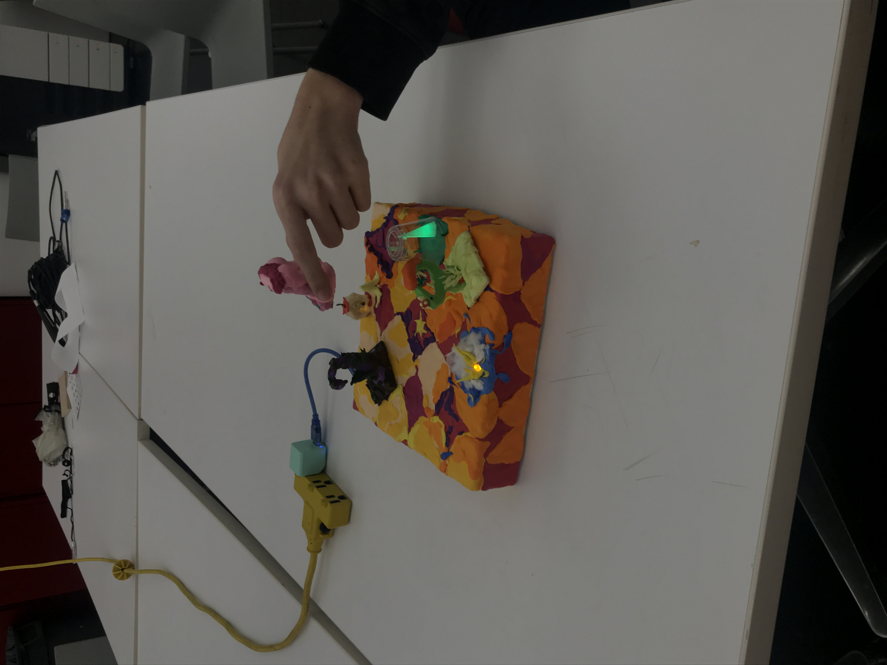

Exquisite Corpses Story Set is my sophomore final Design and Technology project. The purpose of this set was to create a physical structural aid to generative group story-telling. This set is relatively small: roughly 8 x 8 X 5 inches.

Activity:
Three players each sit in front of one of the three light fixtures. From then on, the players individually move their chosen mobile characters on the starred positions. The players begin by collectively creating a main character and linking sentences that connect each segment of the story to the other. On each turn, the player writes a portion of a story. The lights command who is next in the sequence of story telling (requiring a new sentence joining the new segment together). 7 Different LED light movements like blinking and fading are possible-- each light command can suggest different things like pausing to read aloud, creating the finishing line, or switching to individual writings of the same story. The rules here are loose because the purpose of this set is to be as generative as possible. The biggest step is bringing creative minds in an intimate setting and giving them the framework to write freely and with fun.
Core Technology:
The Technology behind the set consists of LED lights, arduino, and hall effect sensors. The digital hall effect sensors are able to pick up on and off signals from interactions with a magnet’s south pole. These allow for wireless (or at least visibly wireless) seamless interactions, which gives more space and a suspension of disbelief essential for successful world building.
Visual Makeup:
Exquisite Corpses Story Set is made up of a box lid, which is covered in air dry clay. This makes the set extremely light, relative to the layers of clay plastered onto the cardboard frame. The set is built up of bright strong colors, in the shape of chessboard. There are five placements on the board, given values with purple clay. The starred positions are where the Hall Effect Sensors are. They pick up the magnet in each of figures.
The light fixtures are representative of different elements of a story: Placement as the Sun peeking over the rolling clouds, the character as the cloaked green figure, and the object as the apple. Each of the light fixtures have intense textural qualities: the sun has light beams that reach out from the water like tentacles and cotton clouds, the cloaked figure is covered in a plastic clear casing that distorts the top of the form where the green led glows from within the white cloak, and the apple is made from a spongy material that disperses the material into a soft warm glow. The light choices in color are also
The figures are each representative of different kinds of fauna. The pink big booty character has a deep magenta drawls with a rose bud in the front. This character personifies the flowery rose in an unexpectedly goofy way-- I wanted to cut through the rose’s characteristics of stifling romance by characterizing the flower as a brolic figure with strong features.
The enchanted swan is a bit of a menacing yet alluring character, its arched neck looking down for a missing egg. It has deep yet contrasted colors: reddish brown, deep purple, and dark green. This figure resembles a moss covered log in an enchanted forest.
The green thorny figure, Taylor is a bit quirkier and more light hearted figure. She has neon yellow thorns and a shape that mimics that of a venus fly trap. She is a bit more edgy and violently brighter than the other characters in comparison.
As a whole, the Exquisite Corpses Story Set has a Simpsons/Jojo’s Circus aesthetic. It’s surreal yet consistent textures and bold yet soothing color choices give it a dreamy quality. The hidden led lights and wires also add to its magical essence, as there is no visible indicator of how it functions as it does. All in all, this set is a tool that is generative as it is explorative. You can use its bare structure to make stories with friends as well as feed off of its different discrete/unexpected outlets of beauty to gain visual inspiration.